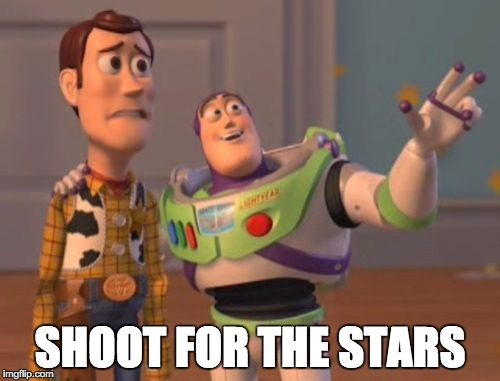
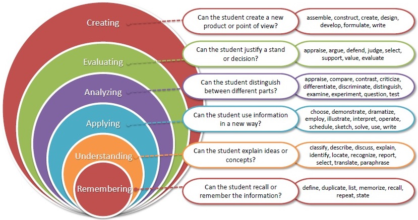

Read the syllabus
... in Blackboard
- When are homeworks, quizzes, and exams?
- How does grading work?
- When are office hours?
- ** Syllabus quiz due Friday! **
- ** CHECK CLASS CALENDAR DAILY! **
High Expectations

Old Westbury Advantages: small class size, can meet with Prof!
Quick Discussion:
- What math do you know?
- What math did you learn in previous classes?
Quick Discussion:
- What challenges do you face in math?
- What do you struggle with in math?
- Why is math hard? (Is math hard?)
- Do you need to be a genius to do math?
Prof.'s Website
- www.jdambroise.com/studyaids
- HOW-TO guides
- make a study sheet, success steps, exam prep
- "Cheat sheets"
- list of algebra & trig rules etc. & more
- MORE !
Time Commitment
A student with a STRONG background
who learns at an AVERAGE pace
will commit at least 10-12 hours / week
interacting with OUR course material
in order to succeed.
(Most students need more time.)
Warning
Use outside materials to enhance not replace our course materials.
- youtube ≠ your textbook
- khan academy ≠ office hours
- even tutoring ≠ appointment with Prof
Math is vast!
Outside materials may explain things differently.
Sometimes that is helpful, but sometimes it's confusing.
Ask the Prof! She can help resolve these discrepancies!
Advice From Students
"I wish I hadn't taken this class while ...
- ... taking organic chemistry."
- ... running 3 businesses."
- ... working full time."
- ... struggling with a drug problem."
- ... having no time for the office hours and tutoring that I needed."
Advice From Students
"I didn't know ...
- ... finishing HW early actually helps to understand the material."
- ... making a summary sheet (or "concept map") actually helps to understand
the math concepts."
- ... working with peers actually helps because you realize
others have the same questions and you shouldn't be afraid to ask."
5 Stages of Learning:
... and your GOALS FOR AN EXAM
- (fail)
Novice:
does know rules but no situational understanding
and cannot adapt quickly
- (fail or
possible pass)
Competent:
easily manages exceptions/deviations to rules
- (pass)
Proficient:
quickly moves beyond situational difficulties;
focuses more on relating math to major & personal life goals
- (good outcome: A or B)
Expert:
student practiced so much they are not
surprised by exam
questions; solving the problems is instinctual/automatic.
- (rare)
Mastery:
mental energy no longer needed to produce nearly perfect results
College Level Thinking

Start Early!! Get excited!!